TEL-001
Player — conversa em andamento
Rota/p/:orgSlug/:formSlug
Quem usaVisitante final.
Onde ficaTela pública principal do formulário.
Conduz a conversa, mantém o histórico acumulado e coleta respostas sem parecer um formulário frio.
Explore as pranchas por módulo e consulte onde cada tela fica, quem a utiliza e para que serve. As imagens são mockups estáticos; o index funciona como galeria de apresentação.
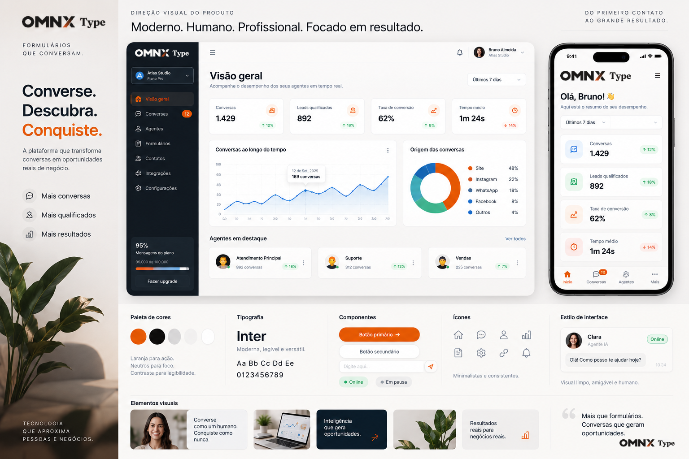
Identidade revisada: OMNX Type nos cabeçalhos, nas interfaces desktop e mobile e nos rodapés das pranchas. Clique em uma imagem para ampliar e conferir os detalhes.
Abrir mapa de coberturaEsta tabela resume onde cada rota principal do sistema foi representada neste pacote. Callback técnicos e estados menores foram agrupados em telas representativas quando isso fazia mais sentido para apresentação.
| Rota | ID | Tela | Prancha |
|---|---|---|---|
| /p/:orgSlug/:formSlug | TEL-001 | Player — conversa em andamento | 01 — Experiência pública / Player conversacional |
| /p/:orgSlug/:formSlug | TEL-002 | Player — bloco de agendamento | 01 — Experiência pública / Player conversacional |
| /p/:orgSlug/:formSlug | TEL-003 | Player — tela final | 01 — Experiência pública / Player conversacional |
| /login | TEL-004 | Login | 02 — Acesso e início |
| /forms | TEL-005 | Lista de formulários | 02 — Acesso e início |
| /forms | Estado | Primeiro acesso / lista vazia | 02 — Acesso e início |
| /forms | Estado | Novo formulário | 02 — Acesso e início |
| /forms/:id/edit | TEL-006 | Construtor — canvas de blocos | 03 — Formulários e construtor |
| /forms/:id/dashboard | TEL-009 | Dashboard do formulário / funil | 03 — Formulários e construtor |
| /forms/:id/edit (abas internas) | TEL-016 | Configurações do formulário | 03 — Formulários e construtor |
| /forms/:id/edit | Estado | Preview do player | 03 — Formulários e construtor |
| /forms/:id/responses | TEL-007 | Respostas — lista | 04 — Respostas e leads |
| /forms/:id/responses | TEL-008 | Resposta — detalhe | 04 — Respostas e leads |
| /forms/:id/responses | Estado | Lead parcial / abandono | 04 — Respostas e leads |
| /settings/integrations | TEL-010 | Integrações — visão geral | 05 — Integrações e IA |
| /settings/integrations | TEL-011 | OpenRouter — BYOK | 05 — Integrações e IA |
| /settings/integrations | Estado | Teste de conexão | 05 — Integrações e IA |
| /forms/:id/webhooks | TEL-012 | Webhooks — endpoints | 06 — Webhooks e API |
| /forms/:id/webhooks | TEL-013 | Webhooks — entregas | 06 — Webhooks e API |
| /settings/api-keys | TEL-014 | API keys e documentação | 06 — Webhooks e API |
| /settings/members | TEL-015 | Organização e membros | 07 — Organização, super-admin e tickets |
| /super-admin, /super-admin/tenants | TEL-017 | Super-admin — overview/organizações | 07 — Organização, super-admin e tickets |
| /tickets | TEL-018 | Tickets de erro | 07 — Organização, super-admin e tickets |
| /dashboard | Atual | Dashboard inicial | 08 — Dashboard, onboarding e fluxo inicial |
| /onboarding/create-organization | Atual | Criar organização | 08 — Dashboard, onboarding e fluxo inicial |
| /dashboard | Atual | Dashboard vazio | 08 — Dashboard, onboarding e fluxo inicial |
| /forgot-password | Atual | Esqueci minha senha | 08 — Dashboard, onboarding e fluxo inicial |
| /reset-password | Atual | Redefinir senha | 08 — Dashboard, onboarding e fluxo inicial |
| /settings/branding | Atual | Marca e identidade | 09 — Marca, segurança, perfis e auditoria |
| /settings/access-profiles | Atual | Perfis de acesso | 09 — Marca, segurança, perfis e auditoria |
| /settings/security | Atual | Segurança | 09 — Marca, segurança, perfis e auditoria |
| /settings/audit-logs | Atual | Logs de auditoria | 09 — Marca, segurança, perfis e auditoria |
| /minha-agenda | Atual | Minha Agenda — visão geral | 10 — Closer / Minha Agenda |
| /minha-agenda | Atual | Detalhe da reunião / lead | 10 — Closer / Minha Agenda |
| /minha-agenda | Atual | Disponibilidade e calendários | 10 — Closer / Minha Agenda |
| /minha-agenda/callback | Atual | Conexão realizada | 10 — Closer / Minha Agenda |
| / | Atual | Landing page | 11 — Site público, institucional e legal |
| /privacidade | Atual | Política de Privacidade | 11 — Site público, institucional e legal |
| /termos | Atual | Termos de Uso | 11 — Site público, institucional e legal |
| /:formSlug | Atual | Player em domínio personalizado | 11 — Site público, institucional e legal |
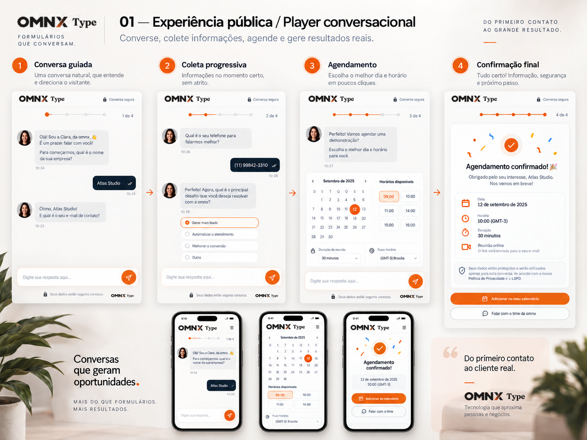
Conduz a conversa, mantém o histórico acumulado e coleta respostas sem parecer um formulário frio.
Permite escolher data, horário, fuso e duração sem sair da conversa.
Confirma o encerramento, resume o agendamento e mostra o próximo passo ou CTA.
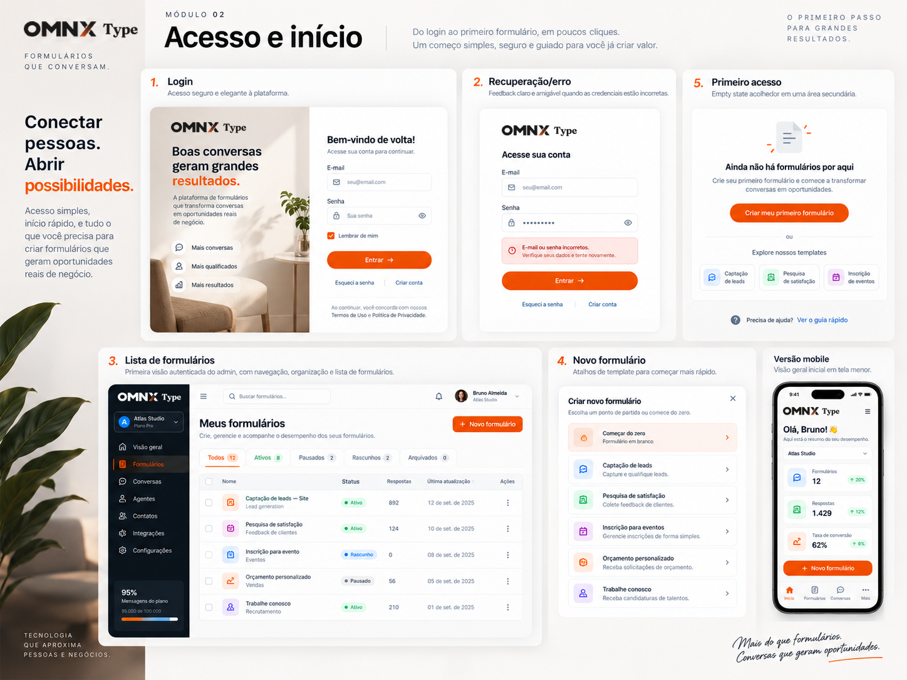
Autentica com e-mail e senha e oferece criação de conta e recuperação de acesso.
Exibe os formulários existentes e os atalhos para construir, analisar respostas e configurar.
Orienta o usuário a criar seu primeiro formulário com CTA claro.
Permite começar do zero ou a partir de templates de perguntas.
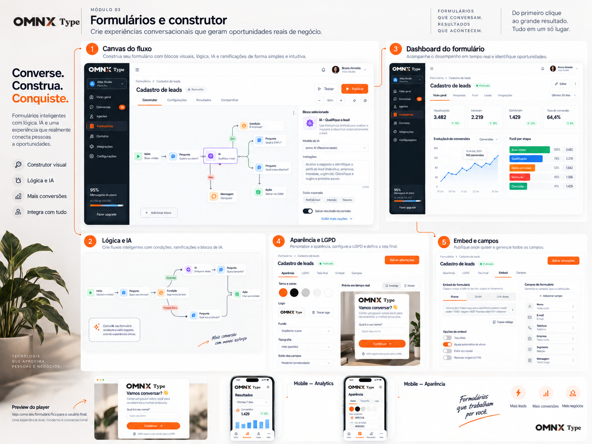
Monta a experiência com mensagens, perguntas, condições, IA, ações e agendamento.
Mostra visitas, inícios, conclusões, conversão e abandono por etapa.
Centraliza aparência, LGPD, tela final, embed e mapeamento de campos.
Mostra como o visitante verá o formulário antes da publicação.
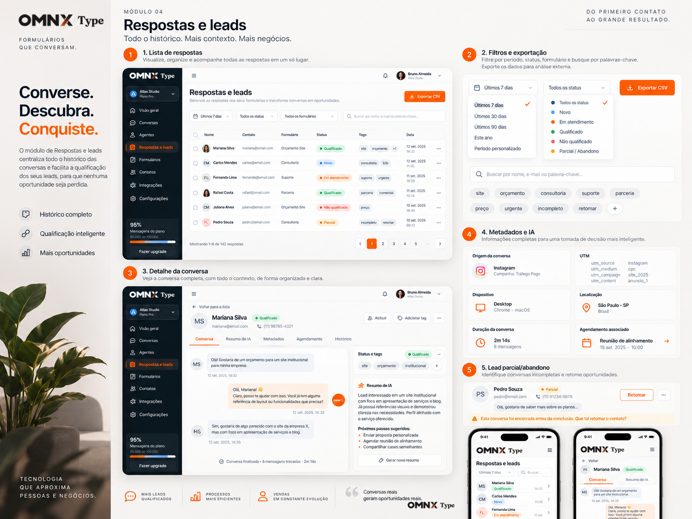
Centraliza todas as respostas com status, tags, busca, filtros e exportação.
Mostra a conversa completa, metadados, agendamento, tags e resumo de IA.
Identifica onde houve abandono para facilitar retomada.
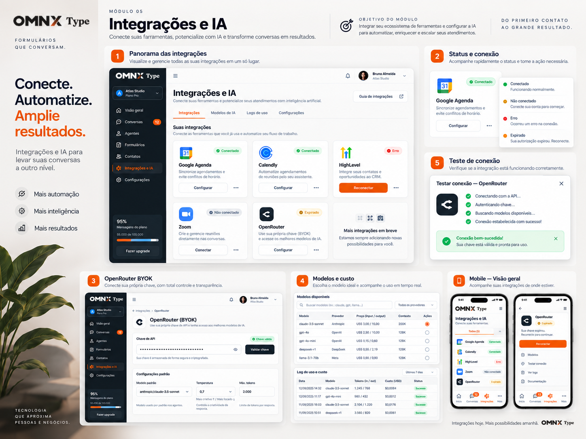
Mostra Google Agenda, Calendly, HighLevel, Zoom, OpenRouter e o estado de cada conexão.
Permite inserir a chave própria, escolher modelos e acompanhar custo estimado.
Verifica se a integração está funcionando antes do uso em produção.
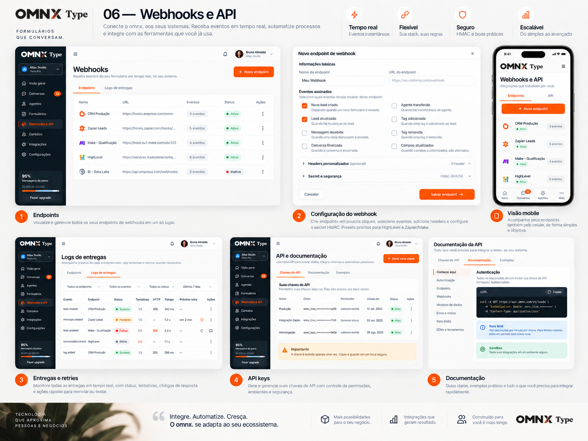
Cria e gerencia endpoints que recebem eventos do formulário com segurança HMAC.
Mostra status de cada entrega, tentativas, códigos HTTP e ações de retry.
Gera chaves, controla escopos e oferece documentação com exemplos de integração.
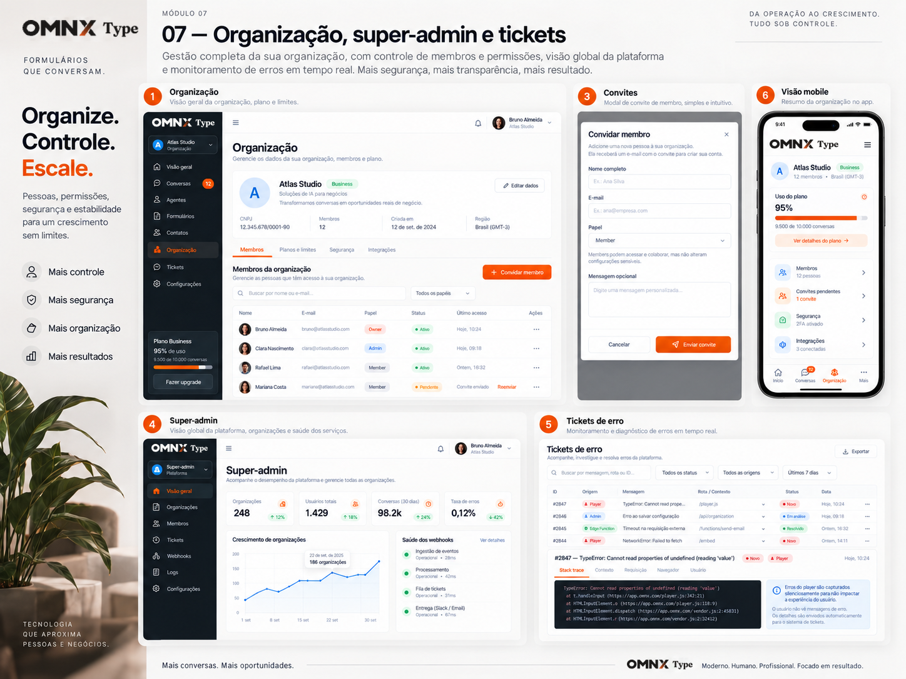
Gerencia dados da organização, membros, convites e limites do plano.
Acompanha visão global, tenants, crescimento e saúde operacional.
Centraliza falhas do player, admin e backend com contexto técnico e status de tratamento.
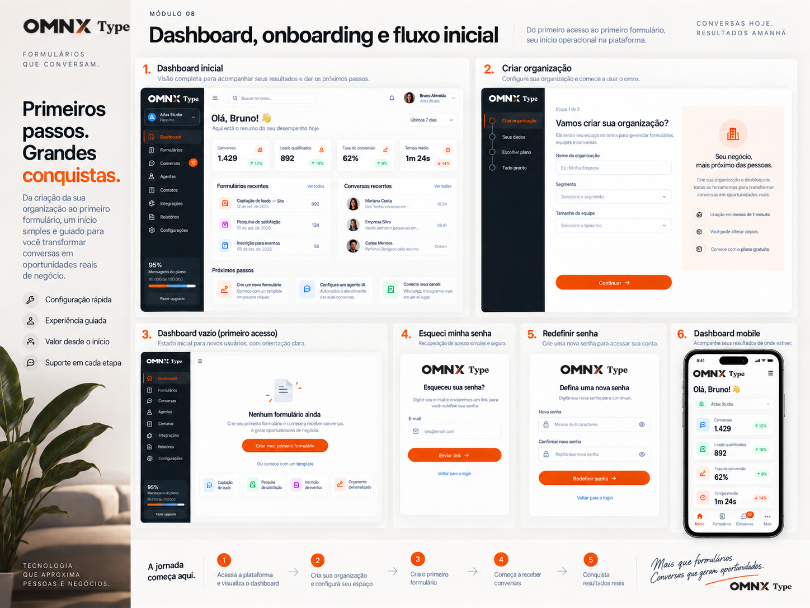
Resume desempenho, mostra próximos passos e direciona o trabalho do dia.
Configura a organização e habilita o restante do produto.
Explica o próximo passo com CTA para criar o primeiro formulário.
Solicita envio do link para redefinir a senha.
Permite criar uma nova senha de forma segura.
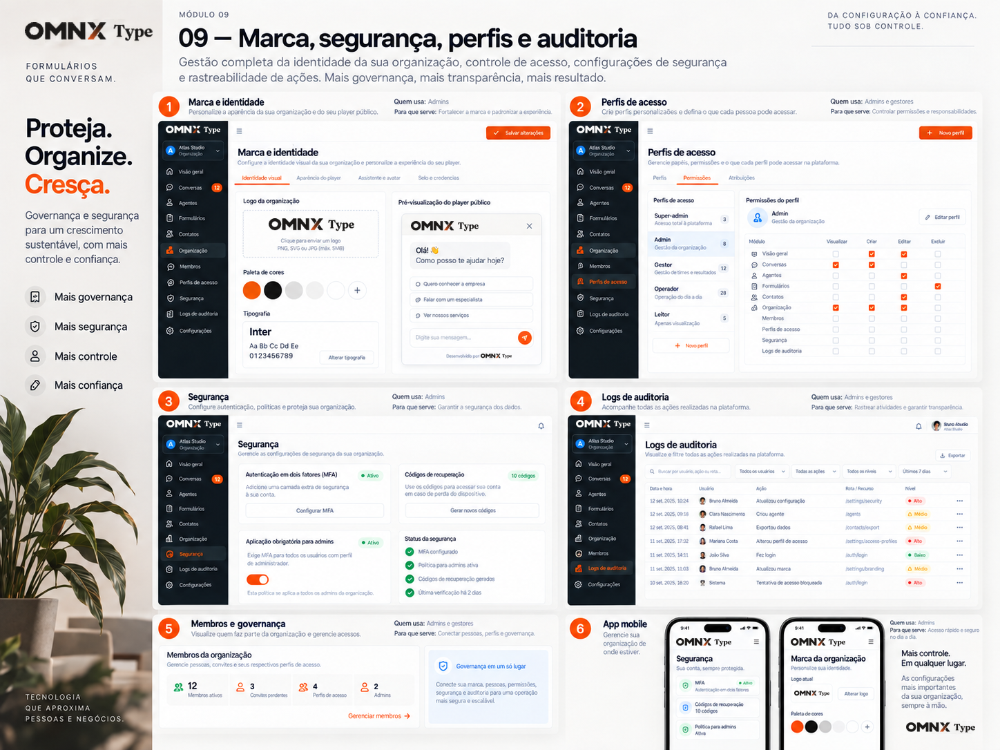
Define logo, paleta, tipografia e pré-visualização do player público.
Controla permissões por papel e o que cada usuário pode acessar.
Configura MFA, políticas para admins e mecanismos de recuperação.
Rastreia ações feitas na plataforma para transparência e compliance.
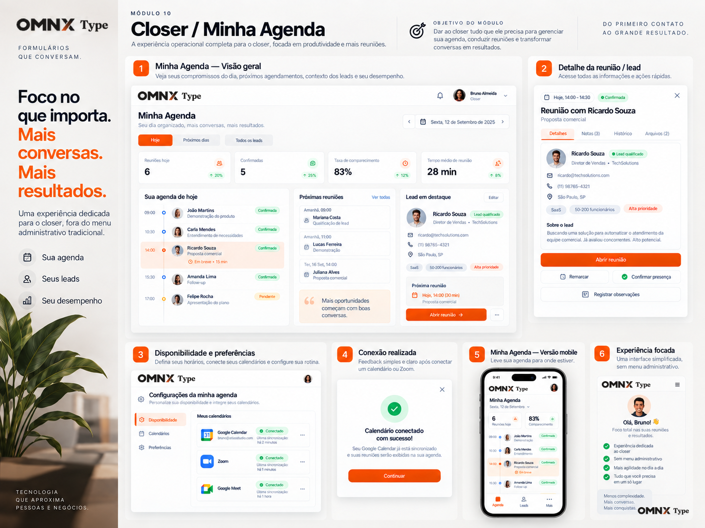
Mostra agenda do dia, próximos compromissos, lead em destaque e desempenho.
Exibe tudo que o closer precisa para conduzir a reunião e registrar andamento.
Permite conectar Google Calendar, Zoom/Meet e definir a rotina de disponibilidade.
Confirma a integração de calendário de forma amigável.
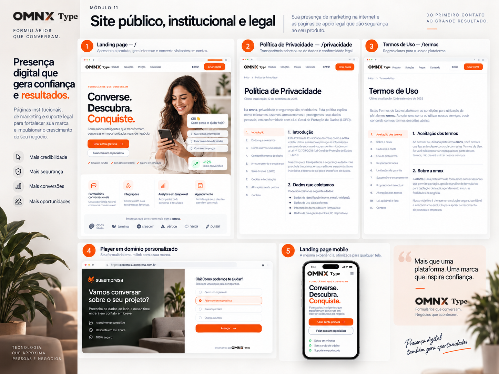
Apresenta o produto, gera interesse e converte o visitante em conta ou lead.
Explica tratamento de dados e reforça confiança e conformidade.
Detalha regras de uso da plataforma e responsabilidades.
Mostra como a experiência pode ser entregue com a marca do cliente.